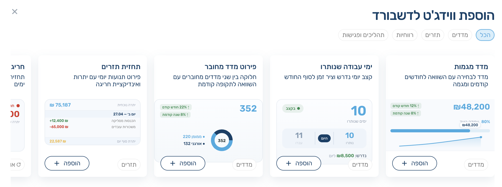
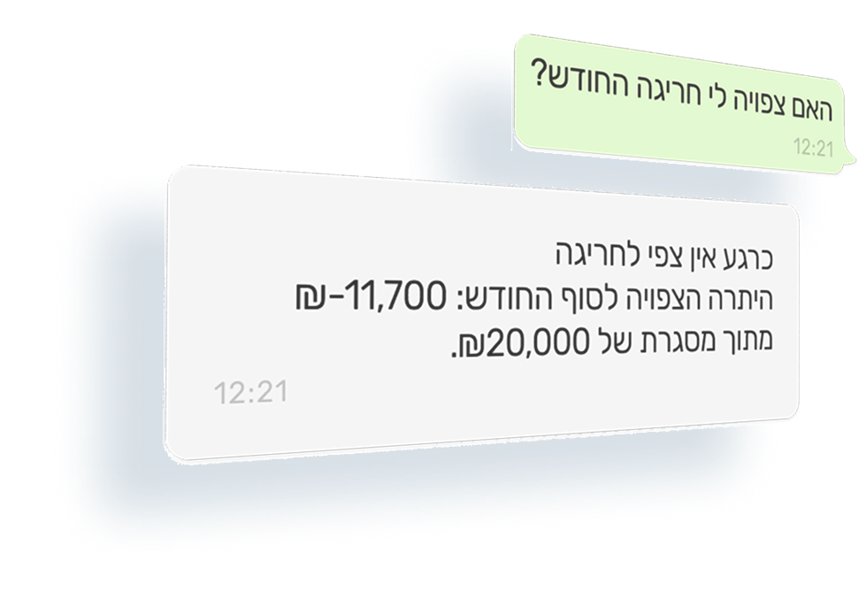

01
העבודה מפוזרת מדי
לקוחות, פגישות, משימות ותובנות מפוזרים בין אקסלים, וואטסאפ ומיילים — ואין מקום אחד שמחזיק את כל התמונה.
פלטפורמה ממותגת ליועצים פיננסיים, עם תובנות AI וצוות תזרים שמנהל ומעדכן את תזרים הלקוחות — כדי שאתה תוכל להתמקד בייעוץ ובהובלת הלקוח קדימה.
ככל שיש יותר לקוחות, היועץ נדרש לנהל יותר פגישות, משימות, תזרים ועדכונים שוטפים — בלי תשתית שממרכזת את העבודה ומאפשרת לו להישאר במקום שבו הוא באמת נותן ערך: הייעוץ.
לקוחות, פגישות, משימות ותובנות מפוזרים בין אקסלים, וואטסאפ ומיילים — ואין מקום אחד שמחזיק את כל התמונה.
ניהול תזרים דורש עדכון, קטלוג, בקרה וזיהוי חריגות — עבודה תפעולית שגוזלת זמן מהייעוץ עצמו.
היועץ יכול לעבוד שעות על ניתוחים, תזרים והמלצות — אבל אם הלקוח לא רואה את זה בזמן אמת, מבחינתו הערך לא קיים.
תשתית של חברת ייעוץ פרימיום — מחלקת בק-אופיס פיננסית, AI מתקדם ואפליקציה ממותגת ללקוחות. בלי לגייס אדם אחד. תחת המותג שלך.
תיק לקוחות חי, ווידג'טים פיננסיים, צ'אט AI שמכיר את כל הלקוחות שלך וסיכום אוטומטי לכל פגישה — דשבורד אחד, נגיש מהדפדפן או מהמובייל.

תזרים מזומנים, רווחיות, מכירות, יעדים מול ביצוע — כל הנתונים החיוניים על כל לקוח בלוח אחד. הווידגטים מתעדכנים אוטומטית מהבנקים, ומציגים את התמונה בשפה של יועץ פיננסי.

AI שמכיר כל אחד מהלקוחות שלך — את הנתונים הפיננסיים, את היעדים, את ההיסטוריה. שואלים אותו שאלה אסטרטגית ומקבלים תשובה מנומקת תוך שניות, ברמה של שותף ייעוץ בכיר.
3 גורמים שזיהיתי בתזרים:
הפגישה מתועדת. ה-AI מתמלל, מסכם, מחלץ נקודות פעולה, מייצר משימות פולואפ — וגם נותן לך משוב מקצועי על הפגישה עצמה: איפה הובלת טוב, מה לחדד בפעם הבאה. כמו שותף בכיר שצופה בך עובד.

כל העבודה השחורה של ניהול תזרים — שאיבת נתונים, קטלוג תנועות, התאמות בנק, מעקבי גבייה והתראות בזמן אמת. הצוות שלנו עושה את הכל על כל לקוח שלך. אתה מקבל את ההחלטות, אנחנו מטפלים בכל השאר.
חיבור ישיר לבנקים, וקליטת מסמכים מהלקוח דרך כל ערוץ — וואטסאפ, אימייל או צילום.
ה-AI מזהה, מסווג ומקטלג כל תנועה ומסמך — הוצאה, הכנסה, ספק, לקוח, קטגוריה.
מנהל תזרים אישי עובר על הכול: סוגר תנועות, מתאים בנקים ומשלים מה שחסר.
הנתונים מתעדכנים בדשבורד שלך. כשאתה פותח לקוח לפני פגישה — הכול כבר מסודר.
לא טבלאות מופשטות — כאן רואים בדיוק מה הצוות שלנו מטפל, מתי, ועם איזה תוצר.
אפליקציה ממותגת, צ'אט AI בוואטסאפ ודוח חודשי מקצועי. הלקוח רואה רק אותך — בכל מסך, בכל הודעה ובכל מסמך.
הלקוח רואה את הלוגו והשם של העסק שלך — לא של HK. גם ב-iOS, גם באנדרואיד, גם בדפדפן.


הלקוח שואל בוואטסאפ — בצ'אט אישי עם ה-AI, או בקבוצה משותפת איתך, ה-AI והלקוח. אתה רואה את הכל ומתערב מתי שצריך.

בכל סוף חודש הלקוח מקבל דוח ברור: לאן הלכו ההוצאות, מאיפה הגיעו ההכנסות, איפה יש שחיקה ואיפה הזדמנויות.
הלוגו שלך, השם שלך, התשובות שלך. הלקוח רואה רק אותך — אנחנו מאחורי הקלעים.
את המערכת תכננו אנשים שחיים ונושמים עסקים בישראל, במיוחד מהכיוון הפיננסי. החזון, הלב וההבנה הטוטאלית מה בעלי עסקים בישראל צריכים, מגיעה משני אנשים — אייל חזות ואופיר קריספין.
HK Studio מסתכל איתך קדימה!

מייסד bizibox — ממשק הניהול הפיננסי הותיק שמשרת עשרות אלפי עסקים בישראל. למעלה משני עשורים פועל לשיפור הביצועים של עסקים בארץ, עם התמחות בהובלת תהליכים אסטרטגיים בחברות בכל סדר גודל.

10+ שנות ניסיון בניהול כספים בחברות מובילות, כולל תפקידי סמנכ"ל כספים. מתמחה בניהול תזרים, בניית תקציב וגיבוש תכנית עסקית.
"מספרים זה לא רק נתונים, זה הסיפור האמיתי של העסק."
שיחה אישית עם אופיר ואייל. נכיר את העסק שלך, תכיר את הפלטפורמה — ונבדוק יחד אם זה מתאים.